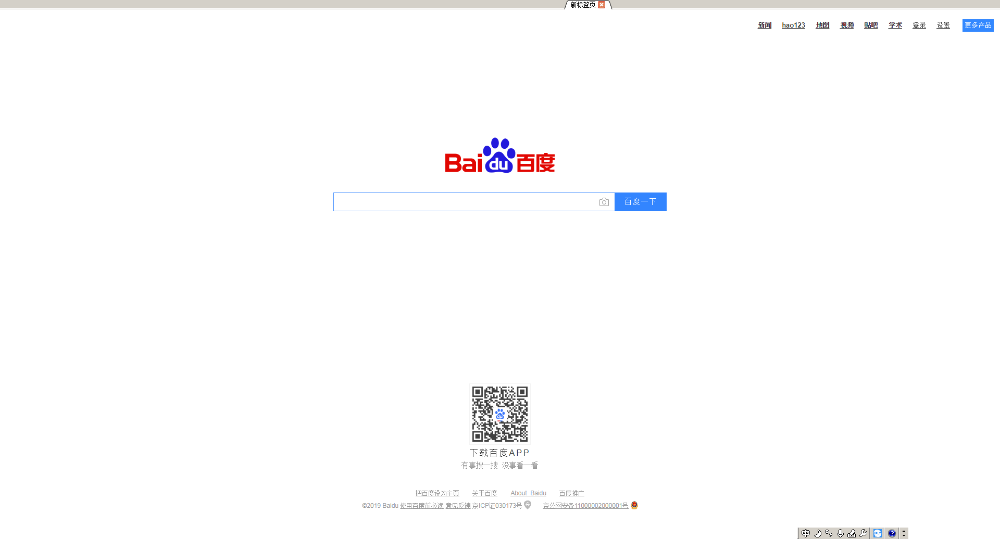

原文出处:本文由博客园博主古风尘提供。
原文连接:https://www.cnblogs.com/gufengchen/p/11532848.html
原文连接:https://www.cnblogs.com/gufengchen/p/11532848.html
完整代码如下：
#!/usr/bin/env python
#-*- coding: utf-8 -*-
import sys
import os
import datetime
from PyQt5.QtWidgets import *
from PyQt5.QtCore import *
from PyQt5.QtWebEngineWidgets import QWebEngineView,QWebEngineSettings
################################################
#######创建主窗口
################################################
class MainWindow(QMainWindow):
def __init__(self, *args, **kwargs):
super().__init__(*args, **kwargs)
self.setWindowTitle('My Browser')
self.showMaximized()
self.setWindowFlags(Qt.FramelessWindowHint)
#####创建tabwidget
self.tabWidget = QTabWidget()
self.tabWidget.setTabShape(QTabWidget.Triangular)
self.tabWidget.setDocumentMode(True)
self.tabWidget.setMovable(True)
self.tabWidget.setTabsClosable(True)
self.tabWidget.tabCloseRequested.connect(self.close_Tab)
self.setCentralWidget(self.tabWidget)
####第一个tab
self.webview = WebEngineView(self) #self必须要有，是将主窗口作为参数，传给浏览器
self.webview.load(QUrl("http://www.baidu.com"))
self.create_tab(self.webview)
#创建tab
def create_tab(self,webview):
self.tab = QWidget()
self.tabWidget.addTab(self.tab, "新标签页")
self.tabWidget.setCurrentWidget(self.tab)
#####
self.Layout = QHBoxLayout(self.tab)
self.Layout.setContentsMargins(0, 0, 0, 0)
self.Layout.addWidget(webview)
#关闭tab
def close_Tab(self,index):
if self.tabWidget.count()>1:
self.tabWidget.removeTab(index)
else:
self.close() # 当只有1个tab时，关闭主窗口
################################################
#######创建浏览器
################################################
class WebEngineView(QWebEngineView):
def __init__(self,mainwindow,parent=None):
super(WebEngineView, self).__init__(parent)
self.mainwindow = mainwindow
##############
self.settings().setAttribute(QWebEngineSettings.PluginsEnabled, True) #支持视频播放
self.page().windowCloseRequested.connect(self.on_windowCloseRequested) #页面关闭请求
self.page().profile().downloadRequested.connect(self.on_downloadRequested) #页面下载请求
# 支持页面关闭请求
def on_windowCloseRequested(self):
the_index = self.mainwindow.tabWidget.currentIndex()
self.mainwindow.tabWidget.removeTab(the_index)
# 支持页面下载按钮
def on_downloadRequested(self,downloadItem):
if downloadItem.isFinished()==False and downloadItem.state()==0:
###生成文件存储地址
the_filename = downloadItem.url().fileName()
if len(the_filename) == 0 or "." not in the_filename:
cur_time = datetime.datetime.now().strftime('%Y%m%d%H%M%S')
the_filename = "下载文件" + cur_time + ".xls"
the_sourceFile = os.path.join(os.getcwd(), the_filename)
###下载文件
# downloadItem.setSavePageFormat(QWebEngineDownloadItem.CompleteHtmlSaveFormat)
downloadItem.setPath(the_sourceFile)
downloadItem.accept()
downloadItem.finished.connect(self.on_downloadfinished)
# 下载结束触发函数
def on_downloadfinished(self):
js_string = '''
alert("下载成功，请到软件同目录下，查找下载文件！");
'''
self.page().runJavaScript(js_string)
# 重写createwindow()
def createWindow(self, QWebEnginePage_WebWindowType):
new_webview = WebEngineView(self.mainwindow)
self.mainwindow.create_tab(new_webview)
return new_webview
################################################
#######程序入门
################################################
if __name__ == "__main__":
app = QApplication(sys.argv)
QCoreApplication.setAttribute(Qt.AA_UseSoftwareOpenGL) #这句解决错误警告：ERROR:gl_context_wgl.cc(78)] Could not share GL contexts.
the_mainwindow = MainWindow()
the_mainwindow.show()
sys.exit(app.exec_())